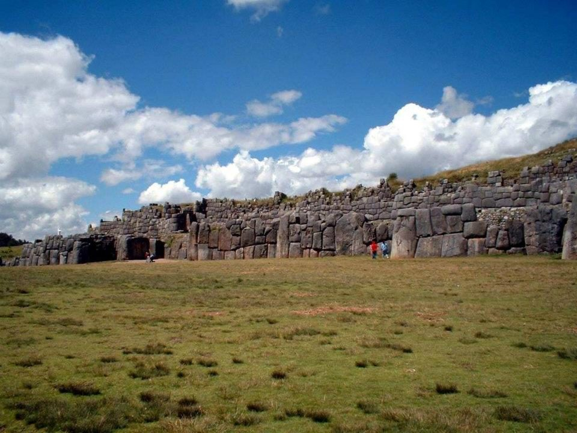
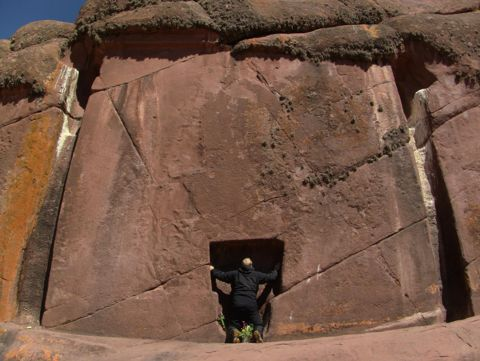

Південна Америка: камінь, пустеля і сіль
Подорожні фотографії з Перу та Болівії, 2011. Виберіть місце для перегляду фотографій, короткої історії та відео.
Фото на обкладинці з поїздки 2011 року. Я сфотографувала черепи в перуанських музеях у 2014 році і камінні голови в Каїрі в 2024 році; сторінка "Починати тут" розміщує ці три подорожі на одній хронології.

Місця
Узбережжя Перу
 Лінії НаскаЯкі фігури може бачити людина, що ходить по стежці?
Лінії НаскаЯкі фігури може бачити людина, що ходить по стежці? Кладбища і акведуки Наски: Чаучілла, Кауахучі, КанталлокЯк виглядав підвір'я Кауахачі для людей, які ходили по ньому?
Кладбища і акведуки Наски: Чаучілла, Кауахучі, КанталлокЯк виглядав підвір'я Кауахачі для людей, які ходили по ньому? Паракас і ХуакачинаПустеля закінчується прямо в холодному морі, повному життя.
Паракас і ХуакачинаПустеля закінчується прямо в холодному морі, повному життя.Тітікака
 СиллустаніГробова вежа, яка ширіша в верхній частині, ніж в нижній частині.
СиллустаніГробова вежа, яка ширіша в верхній частині, ніж в нижній частині. Пуно і озеро ТитикакаОстрови Урос виткані з тростини тотора і постійно перебудовуються.
Пуно і озеро ТитикакаОстрови Урос виткані з тростини тотора і постійно перебудовуються. Чукуіто: Інка УйоДесятки кам'яних фаллічних символів у маленькому оточенні. Скільки їм років?
Чукуіто: Інка УйоДесятки кам'яних фаллічних символів у маленькому оточенні. Скільки їм років?
Араму Муру (Hayu Marca)Двері, вирізані в скелі, без місця за ними.Куско і Священна долина
 КускоХто створив цей замок, і що було побудовано навколо нього пізніше?
КускоХто створив цей замок, і що було побудовано навколо нього пізніше? СаксаюаманТри зигзагові стіни піднімаються на схил над Куско.
СаксаюаманТри зигзагові стіни піднімаються на схил над Куско. Мачу-ПікчуКоли в 1911 році сюди прибув Хайрам Бінгем, тут жили місцеві фермери.
Мачу-ПікчуКоли в 1911 році сюди прибув Хайрам Бінгем, тут жили місцеві фермери. ОлантайтамбоРожеві камені лежать покинуті вздовж дороги від кар'єри.
ОлантайтамбоРожеві камені лежать покинуті вздовж дороги від кар'єри. Пісак і священна долинаТерраси спускаються по схилі гори, як гігантські сходи.
Пісак і священна долинаТерраси спускаються по схилі гори, як гігантські сходи.